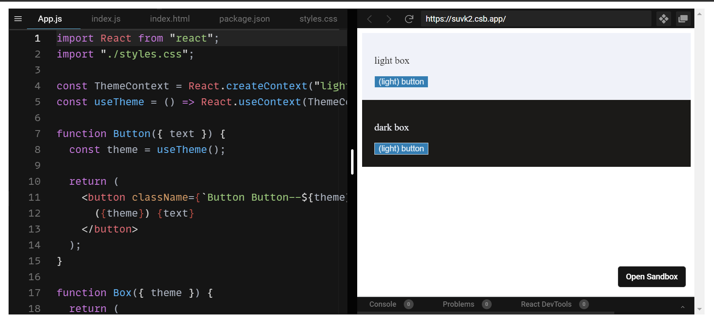
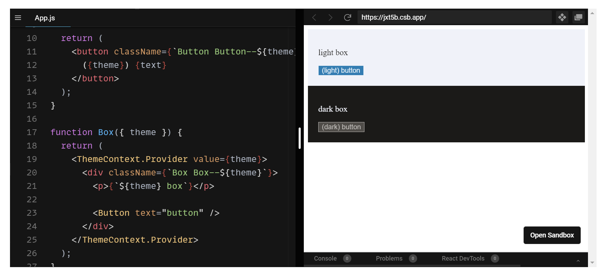

React is declarative. It’s almost the first thing you are told about the library in its home page:
But, what does it mean? “Declarative”, at least in the programming sense, is usually defined as “telling what to do instead of how to do it”. When we talk about React being declarative, the most common explanation revolves around how when you write a component, you just tell React what do you want the DOM to look like, and just let React handle it from there. You don’t have to worry about how the different elements currently in the web page have to change, or which ones have to be removed or inserted. You just say “I want a button there, and I want it disabled”, and React makes it happen. “Now I want the button to be enabled”. No problem, React’s got your back.
So that’s one way of looking at it: React applications are declarative regarding the DOM manipulation. I like to think about this as the first declarative layer of React. Because there is a second layer: React components are also declarative regarding their own rendering.
Components Rendering is Declarative
Have you ever wondered what makes React function components different from plain JavaScript functions? Is there any difference?
No, there isn’t. “React function component” is just a fancy name for a JavaScript function. That’s clear when you define a React function component: you just define a JavaScript function. The real difference lies in the way you use that function.
Forget React for a second. What do you use functions for when programming plain JavaScript (or any other language for that matter)? A function is just a bunch of statements grouped as a unit, which you define with a single purpose: invoking it.
Now back to React: when do you invoke your component functions? Exactly! Never. React is the one invoking them. You use React elements to tell React which functions to invoke when rendering each component, but the library decides when to invoke them. That makes the rendering of components declarative.
Imperative vs Declarative Rendering: an Example
To better grasp the implications of declarative rendering, take a look at this example:

As you can see, we are using the |Button| component as a plain JS function (line 15): we call it passing the props we want it to use, and everything works fine.
Now, say we decide to handle the |theme| using React Context API at the Box component level. Suddenly, the |Button| component stops working:
What’s going on here? React Context API is defined in terms of containment: nested components have access to the context exposed via Context Providers. OK, but isn’t our Button component nested inside the ThemeProvider component?
The answer is: no, it isn’t. We’re not using Button as a component but as a plain function. Instead of letting React handle the rendering of Button, we render it by ourselves, invoking Button while React is still rendering Box. When we call the Hook to access the context value, React knows nothing yet about the ThemeProvider, because we are still rendering the Box component!
If we use Button as a component, everything works as expected:
Now we are using the function as a React function component: instead of invoking it, we tell React that we want it to invoke the function whenever it sees fit. We don’t render, we declare what we want React to render for us.